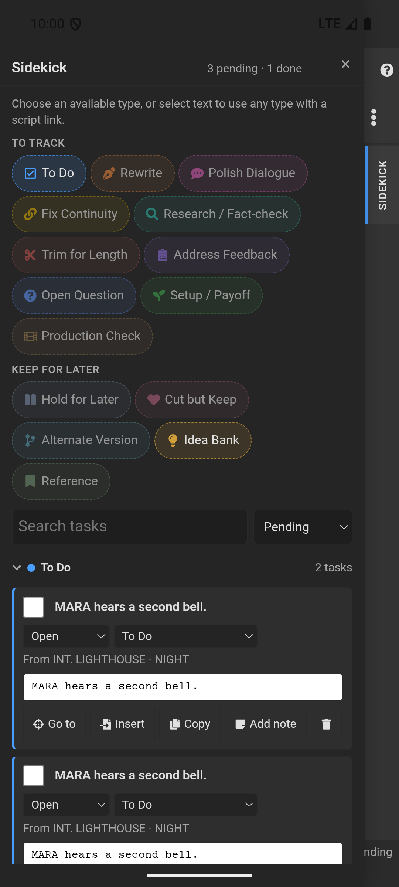
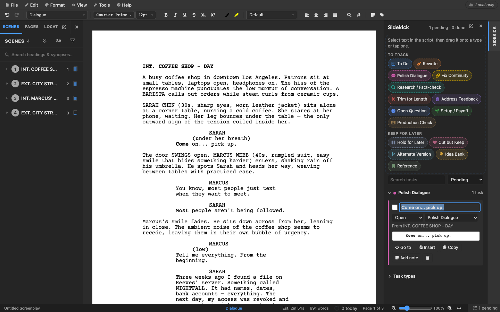

Sidekick
Keep rewrites, ideas and cut passages with the screenplay they belong to.
Open Sidekick
Sidekick is built in as an add-on and stays off until you turn it on in Tools > System Settings > Add-ons. Once it is on, choose Tools > Sidekick > Show Sidekick with a screenplay open. You can also open it from the task count in the status bar when that count is visible. Turn it off again in the same place.
File text or add an idea
- Select a word or passage in the screenplay. On a touchscreen, press and hold the text, then adjust the selection handles.
- Open Sidekick and tap a task type. With a mouse, you can also drag selected text onto a type. To Do accepts a cursor when you want to leave a reminder at that place. Idea Bank lets you start a task anywhere.
- Open the new card to edit the subject, add a note, or change its status. To Do copies the selection. Hold for Later and Cut but Keep move it out of the screenplay and store the excerpt on the card.

Review and restore tasks
Search by subject, note, excerpt or scene. Use Show to switch between pending, done and used, or all tasks. On a card linked to the screenplay, Go to jumps to the source. Use Insert to put a kept excerpt back into the screenplay. To restore moved text at its original location, choose Go to first, reopen the panel if it closed, then choose Insert.

Change task types
Open Task types in the panel. For each type, choose whether it copies or moves the selection and whether it requires selected text, accepts a cursor, or can be used without a script link. You can hide types you rarely use or create one for this screenplay.
Save, share and export
Save the screenplay to keep its tasks. They travel with the script in OpenDraft backups, OpenDraft files, Final Draft and Fountain round trips through OpenDraft, and live collaboration. Sidekick makes no separate network requests. Turning it off leaves its tasks in the screenplay.
For a standalone list, choose File > Export > Sidekick Tasks (.md). For a table you can save as CSV or PDF, choose Tools > Analytics > Reports > Sidekick tasks.